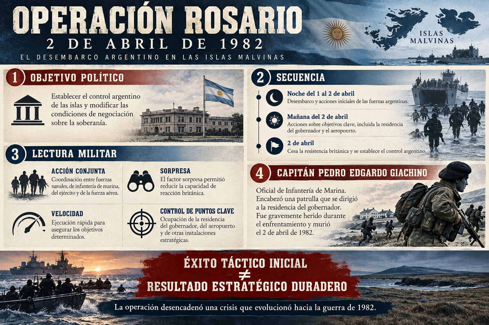

Acción conjunta
La coordinación entre fuerzas navales y terrestres permitió transportar, desembarcar y apoyar a las unidades que debían actuar sobre objetivos decisivos.
Una mirada histórica a la operación anfibia argentina, sus objetivos militares y políticos, sus consecuencias estratégicas y la actuación del capitán Pedro Edgardo Giachino.
La Operación Rosario fue la acción militar argentina que culminó con el desembarco y el establecimiento del control argentino en las Islas Malvinas el 2 de abril de 1982. Su resultado inmediato fue rápido; sus consecuencias políticas y estratégicas, en cambio, fueron mucho más amplias y condujeron a la guerra con el Reino Unido.
Fue una operación conjunta que integró medios navales, Infantería de Marina, comandos anfibios, buzos tácticos, elementos del Ejército y apoyo aéreo. La Fuerza de Tareas Anfibia 40 zarpó de Puerto Belgrano el 28 de marzo. El mal tiempo obligó a postergar el desembarco previsto inicialmente para el 1 de abril.
Cronología sintética elaborada a partir de fuentes institucionales; las horas y la interpretación de algunos episodios pueden variar entre relatos.
La coordinación entre fuerzas navales y terrestres permitió transportar, desembarcar y apoyar a las unidades que debían actuar sobre objetivos decisivos.
El desembarco nocturno y las acciones simultáneas limitaron el tiempo disponible para organizar una respuesta británica prolongada.
El aeropuerto y los edificios de mando tenían valor inmediato para asegurar la llegada de refuerzos y consolidar el control de la localidad.
La operación debió adaptarse a condiciones meteorológicas adversas. El análisis militar destaca la coordinación entre componentes, el empleo de fuerzas especiales, la flexibilidad del plan y la necesidad de evitar un combate prolongado en la zona urbana. La intención declarada de limitar bajas no eliminó el riesgo ni impidió que se produjeran muertos y heridos.
La soberanía de las Islas Malvinas es objeto de una disputa histórica entre Argentina y el Reino Unido. El Reino Unido estableció su control en 1833 y Argentina mantuvo su reclamo. La cuestión también se abordó en las Naciones Unidas, que promovieron negociaciones entre las partes.
La decisión de ocupar las islas fue adoptada por la dictadura militar argentina en un contexto de crisis económica, conflictividad social y pérdida de legitimidad interna. La reivindicación de soberanía tenía una larga historia, pero la decisión de recurrir a la fuerza fue una elección política concreta de las autoridades de facto.
La lógica estratégica de la operación era modificar la situación sobre el terreno y crear condiciones para una negociación sobre la soberanía. El cálculo dependía, en parte, de que el Reino Unido optara por una salida diplomática o tuviera dificultades para organizar una respuesta militar distante.
La reacción británica mostró el riesgo de ese supuesto. La toma inicial de objetivos se consiguió en pocas horas, pero no produjo una solución política estable ni evitó una campaña militar. La guerra terminó el 14 de junio de 1982 con la rendición argentina.
Se alcanzaron los principales objetivos inmediatos del desembarco y se estableció el control argentino de las islas.
La respuesta británica transformó la ocupación en una guerra y demostró que el éxito táctico no garantiza alcanzar el propósito político final.
Entre las lecciones estratégicas están la necesidad de evaluar la voluntad del adversario, la sostenibilidad logística, el apoyo internacional, los escenarios posteriores a la operación y el costo humano de una escalada.
Pedro Edgardo Giachino nació en Mendoza el 28 de mayo de 1947 e ingresó a la Armada Argentina en 1964. Se orientó a la Infantería de Marina y completó formación en comandos y reconocimiento anfibio. A fines de 1981 asumió como segundo comandante del Batallón de Infantería de Marina N.º 1, con el grado de capitán de corbeta.
En la Operación Rosario encabezó una patrulla de Comandos Anfibios y Buzos Tácticos que desembarcó durante la noche del 1 de abril. Su misión era procurar la rendición del gobernador británico antes de que el grueso de las fuerzas argentinas ingresara en la localidad, con el propósito de evitar un combate urbano mayor.
En la mañana del 2 de abril, la patrulla rodeó la residencia del gobernador y exigió la rendición. Se produjo un intercambio de disparos. Giachino avanzó hacia el edificio y resultó gravemente herido; también fueron heridos el teniente de fragata Diego García Quiroga y el cabo segundo enfermero Ernesto Urbina. Giachino murió a causa de sus heridas. Posteriormente recibió la Cruz al Heroico Valor en Combate y fue ascendido póstumamente a capitán de fragata.
Esta infografía resume el objetivo político, la secuencia general, algunos factores militares y la actuación del capitán Giachino. Usala como apoyo visual: para fechas, nombres y detalles, consultá las fuentes citadas al final.

Documental independiente cuyo primer capítulo narra la planificación y ejecución de la Operación Rosario. El proyecto fue investigado, escrito, dirigido, producido y editado por Gabriel Concatti, con colaboradores en diseño y edición.
▶ Abrir en YouTube Fuente del documental
Si el reproductor no aparece por restricciones del navegador o de YouTube, usá el botón para abrir el video directamente.
Criterio de trabajo: las fuentes institucionales aportan cronologías y perspectivas propias. Para un trabajo académico, contrastar los relatos con bibliografía histórica y documentación diplomática, citar imágenes y registrar la fecha de consulta.